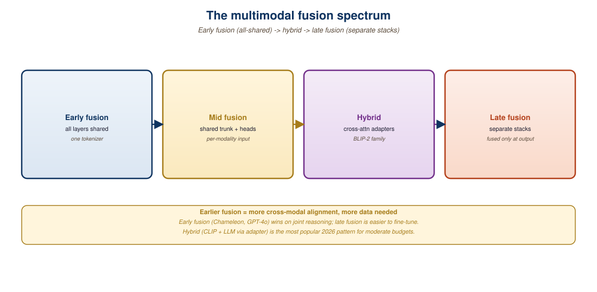

"Where you mix the modalities determines how deeply they ever talk to each other."
Pixel, Fusion-Curious AI Agent
Once you commit to a native multimodal architecture (see Section 22.6), the next question is where in the network the modalities combine. Early-fusion models tokenize every modality and feed all tokens into a single transformer from the input embedding layer. Late-fusion models keep modality-specific encoders that produce features, then combine those features near the top of the network. The choice has deep consequences for cross-modal reasoning depth, training data efficiency, and the kind of capabilities the final model exhibits. This section examines the two patterns and the gradient of intermediate "mid-fusion" designs (LLaVA-style projection layers, Q-Formers, perceivers) that dominate the open-source landscape.
Prerequisites
This section assumes the VLM architecture from Section 22.1 through Section 22.4, and the cross-attention mechanics from Section 4.3.

22.7.1 Three Points on the Spectrum
Meta's Chameleon used early fusion on every modality. It generates striking interleaved text and images and quietly refuses to produce coherent images at all in its public release because the team decided the safety risk was too high. The model that could do the most was the model that was allowed to do the least.
Think of fusion as how soon an image's bytes start influencing a sentence's grammar. Three food metaphors cover the spectrum:
- Early fusion is a smoothie. Text, image, and audio tokens are blended at layer 1, and from then on the transformer cannot tell which input was which.
- Mid-fusion is a sandwich. Each modality is prepared separately (CLIP for images, Whisper for audio), then layered into a fixed slot at the LLM input.
- Late fusion is a side-by-side tasting flight. Two encoders run in parallel and only meet at the contrastive head.
The training cost order matches the depth of mixing. Chameleon (early) required from-scratch training of one giant model. LLaVA (mid) required only training a 250-million-parameter projector against a frozen Llama. CLIP (late) required two encoders trained against each other with a single dot product as the bridge.
Where this model breaks down: the onion is a one-dimensional axis; real systems often mix strategies (LLaVA-NeXT uses late-fused images for retrieval and mid-fused images for generation), so "early/mid/late" is a useful taxonomy for one-modality-at-a-time, not a hard architecture rule.
Fusion is a continuum, but three operating points cover most production systems:
- Early fusion (Chameleon, Llama-4-Omni input side): every modality is tokenized at the input. Text uses BPE tokens, images use VQ-VAE or similar discrete codes, audio uses a neural codec like SoundStream. All tokens are interleaved and processed by the same transformer from layer 1 onward.
- Mid-fusion (LLaVA, Qwen-VL, Idefics2): each modality has its own frozen encoder (CLIP-ViT for images, audio Whisper, etc.) that produces feature vectors. A small projection layer (linear or MLP) maps those features into the LLM's embedding space. They are then prefixed or interleaved with text tokens and fed into a vanilla text LLM.
- Late fusion (CLIP-style retrieval models): modality-specific encoders produce embeddings that meet only at the contrastive head or the very last attention layer. Late fusion is dominant in retrieval (Section 33.1) but rare in generation.
22.7.2 Early Fusion Mechanics: The Chameleon Approach
Meta's Chameleon (Team, 2024) is the cleanest expression of early fusion. The full pipeline:
- Train a discrete image tokenizer (a VQ-GAN-style encoder) that maps a 256x256 image to 1024 tokens from a 8192-entry codebook.
- Train a discrete audio tokenizer similarly.
- Expand the LLM's vocabulary to include the image and audio codebook entries.
- Train a single autoregressive transformer on interleaved sequences of text, image, and audio tokens, with a unified next-token-prediction objective.
The result is a model that does not distinguish between modalities at the architectural level. Every layer sees every token type and learns whatever cross-modal patterns the data demands. The same approach drives the input side of Llama-4-Omni and the image generation head of GPT-4o.
The autoregressive transformer's bread and butter is next-token prediction over a discrete vocabulary. To plug images and audio into this scheme, you need a tokenizer that produces a finite codebook. VQ-VAE, RVQ (residual vector quantization), and FSQ (finite scalar quantization) are the three dominant choices. The quality of these tokenizers caps the quality of any early-fusion model: a lossy image tokenizer puts a ceiling on image generation fidelity. Diffusion-based image generation in late-fusion designs sidesteps this entirely, which is why GPT-4o's image output uses a non-tokenized diffusion path.
22.7.3 Mid-Fusion Mechanics: The LLaVA Pattern
LLaVA (Liu et al., 2023) crystallized the mid-fusion recipe that dominates open-source multimodal LLMs in 2024-2026:
- A frozen vision encoder (CLIP ViT-L/14) extracts patch embeddings from the input image, typically 576 tokens at 24x24 patches.
- A small projection layer (a 2-layer MLP) maps those 576 tokens from the vision encoder's hidden dim into the LLM's embedding dim.
- The projected tokens are prepended to the text token sequence and fed into a frozen or fine-tuned LLM (Vicuna, Mistral, Qwen-2).
The forward pass can be written compactly as
where $\mathbf{I}$ is the input image, $\mathbf{T}$ is the text token sequence, $\mathrm{ViT}$ is the frozen vision encoder, and $\phi$ is the trainable 2-layer MLP projector that bridges the vision and language embedding spaces. Only $\phi$ is trained in LLaVA's first stage; the LLM is fine-tuned (often with LoRA) in the second stage.
A LLaVA-1.5-7B model uses CLIP ViT-L/14 at 336×336 resolution, which yields 24×24 = 576 visual tokens per image. Each visual token costs the same as a text token inside the LLM, so a single image consumes 576 of the LLM's 4096 context slots: ~14% of the context window. Adding LLaVA-1.5's "high-resolution" trick (sub-image crops at 4 positions plus the global view) multiplies this by 5x, giving 2880 visual tokens per image and leaving only 1216 slots for text. This is why models that need long text histories with multiple images shifted toward perceiver-style or Q-Former resamplers that compress the visual token count down to a fixed ~64 to 256 regardless of image resolution.
# Mid-fusion forward pass: vision encoder + projection + LLM.
import torch
import torch.nn as nn
class MidFusionVLM(nn.Module):
def __init__(self, vision_encoder, llm, hidden_dim=4096):
super().__init__()
self.vision = vision_encoder # CLIP ViT-L, frozen
self.llm = llm # Mistral-7B, fine-tuned
self.projector = nn.Sequential(
nn.Linear(vision_encoder.hidden_dim, hidden_dim),
nn.GELU(),
nn.Linear(hidden_dim, hidden_dim),
)
def forward(self, image, text_token_ids):
# 1. Encode image as 576 visual tokens of vision_encoder.hidden_dim
with torch.no_grad():
visual = self.vision(image).last_hidden_state
# 2. Project into LLM's embedding space
visual_proj = self.projector(visual)
# 3. Embed text tokens
text_emb = self.llm.embed_tokens(text_token_ids)
# 4. Concatenate: [visual_tokens, text_tokens]
combined = torch.cat([visual_proj, text_emb], dim=1)
# 5. Run through the LLM transformer stack
return self.llm.transformer(inputs_embeds=combined)Variants of the basic recipe include:
- Perceiver Resampler (Flamingo, Alayrac et al. 2022; Idefics): a fixed number of learned latent queries (typically 64) cross-attend to the raw vision features and emit a fixed-size summary. Flamingo then injects this summary into a frozen LLM via interleaved gated cross-attention blocks rather than direct token concatenation. The Resampler predates Q-Former and inspired it.
- Q-Former (BLIP-2, Li et al. 2023): a Perceiver-style resampler with learnable query tokens that compresses the vision features to 32 tokens, but additionally trained with image-text matching, image-text contrastive, and image-grounded text generation losses before being attached to the LLM. The compressed tokens are then concatenated into the LLM input (not cross-attended like Flamingo).
- Dynamic resolution (Qwen2-VL): the vision encoder produces a variable number of tokens depending on input resolution, letting the model handle high-res images without truncating detail.
The Perceiver Resampler maps a variable number of vision features to a fixed set of 64 learned latent queries that cross-attend to those features, so downstream cost is constant regardless of image resolution. Flamingo then inserts new gated cross-attention layers between the frozen LLM's existing blocks; each new layer is wrapped in a tanh gate initialized at zero, so at the start of training the model behaves exactly like the original text LLM and the visual pathway switches on gradually. This zero-init gating is what lets a powerful pretrained LLM absorb a new modality without catastrophic forgetting of its language ability.
22.7.4 Capability Trade-offs
| Aspect | Early Fusion | Mid-Fusion | Late Fusion |
|---|---|---|---|
| Cross-modal depth | Highest | Medium | Lowest |
| Training data efficiency | Lowest (needs huge multimodal corpus) | Highest (leverages pretrained components) | High |
| Compute cost | Highest | Medium | Lowest |
| Modality swappability | Hard (retrain tokenizer) | Easy (swap projection layer) | Easy (swap encoder) |
| Generation across modalities | Native | Needs separate decoder | Needs separate decoder |
| Reasoning about visual details | Strong (when trained well) | Strong | Limited |
| Production examples (2026) | Chameleon, Llama-4-Omni, GPT-4o input | LLaVA, Qwen2-VL, Idefics, Pixtral | CLIP for retrieval |
Mid-fusion's killer feature is parameter efficiency. Training a CLIP-LLaVA-style model from scratch needs only the projection layer (~few million parameters) plus optional LoRA on the LLM. A small team can produce a competitive multimodal LLM in days on academic hardware. Early-fusion models like Chameleon need full pretraining on billions of multimodal samples, which is out of reach for most labs. The asymmetry shows in the leaderboards: nearly every popular open-weight VLM in 2024-2026 is mid-fusion.
22.7.5 Fusion and Generation
Fusion choice affects not just understanding but generation. To generate an image, a mid-fusion model must either:
- Emit special "image tokens" that a downstream diffusion model decodes (GILL, MGIE).
- Output a CLIP-aligned latent that a frozen image generator consumes (BLIP-Diffusion).
- Call out to a separate image-generation tool via function-calling (the early ChatGPT + DALL-E 3 architecture).
An early-fusion model can in principle emit image tokens directly through the same autoregressive head that emits text. Chameleon does this; GPT-4o's image generation appears to use a hybrid (early-fusion text+image tokens at the input, with a diffusion model handling the actual pixel synthesis on the output side). The trade-off is the tokenizer fidelity bottleneck mentioned earlier.
Early-fusion image generation looks elegant but caps out at the quality of the discrete tokenizer. VQ-GAN style tokenizers have residual artifacts (color shifts, mosaicked edges) that the autoregressive model cannot fix. The state of the art (2026) routes image generation through a diffusion decoder even in otherwise early-fusion architectures: the LLM emits a continuous latent, and a diffusion model paints the pixels. Stay aware of where the modality boundary actually lives in a given model.
22.7.6 Evaluation Pitfalls
Benchmarks for multimodal models often reward modality alignment more than cross-modal reasoning. MMMU and MMBench, for example, can be partially solved by models that just project image features into an LLM's input, with limited cross-modal reasoning. To stress-test fusion depth, look for benchmarks that require:
- Visual grounding (RefCOCO, Visual7W): the model must point at a region described in text.
- Cross-modal arithmetic (ChartQA, MathVista): the answer requires multi-step reasoning over numerical content in an image.
- Compositional generation (T2I-CompBench, GenAI-Bench): the model must produce an image faithful to a complex text prompt.
- Long-form interleaved (Mantis, MMDU): the model must handle dozens of images interleaved with text across thousands of tokens.
A 2025 e-commerce team needed an internal VLM for product attribute extraction from photos. The two finalists were a mid-fusion LLaVA-1.6 fine-tune and a 3B-param early-fusion model trained in-house. The team chose the mid-fusion option because (a) projection-layer fine-tuning hit 92% accuracy on the team's eval in 3 days, (b) swapping the CLIP encoder for a domain-specific encoder later was a 1-day change rather than a full retrain, and (c) the team had no need for cross-modal generation. The early-fusion model would have offered marginal accuracy gains at 10x the training cost.
Where modalities fuse determines the model's cross-modal capability ceiling and its training cost. Early fusion gives the deepest cross-modal reasoning but needs frontier-scale training data and faces the discrete-tokenizer bottleneck on generation. Mid-fusion is the parameter-efficient default for open-source VLMs and works for nearly all understanding tasks. Late fusion dominates retrieval but is unfit for generation. Match the fusion design to the capability target and the data budget; do not chase early fusion unless you are training at frontier scale or need joint generation across modalities.
Show Answer
Show Answer
Show Answer
Show Answer
What Comes Next
Section 22.8: Any-to-Any Generation covers the generalist models, NextGPT, AnyGPT, Unified-IO 2, that take the early-fusion idea to its conclusion: a single network that consumes and produces every modality.